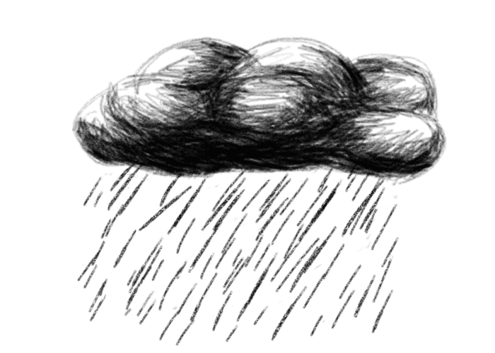
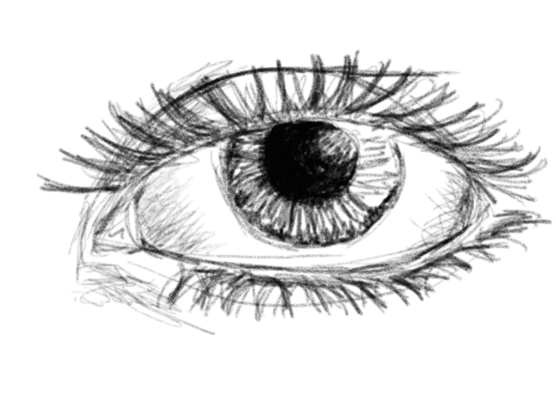
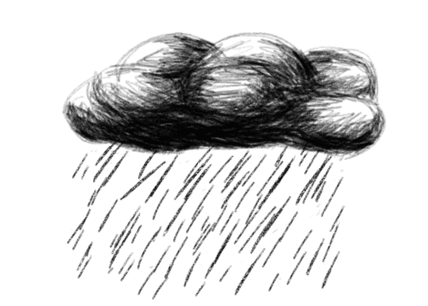
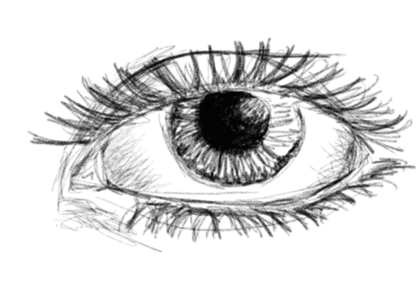
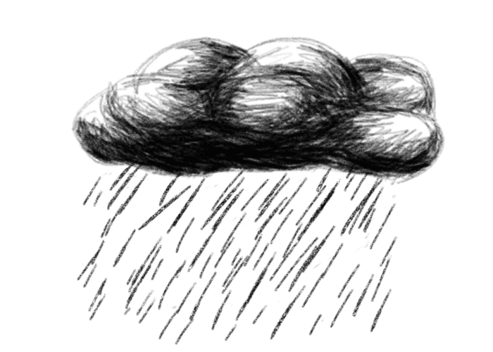
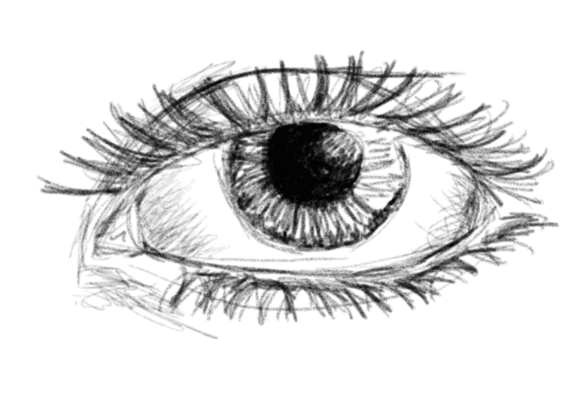

Présentation
Bonjour ! Je m'appelle Alicia et je vous souhaite la bienvenue sur mon site !
Passionnée par le dessin depuis toute petite, j'ai rapidement su affirmer ma créativité et mon désir de réaliser des choses originales, qui sortent du commun. Toujours envieuse d'apprendre, j'ai vite été attirée par les possibilités quasi infinies que donnent l'informatique.
Issue d'une formation d'ingénieur Informatique Multimédia et Réseaux en alternance à Lannion, j'ai eu la joie de pouvoir enrichir et exercer mes compétences dans les deux domaines que j'apprécie le plus, le graphisme et le développement web. C'est ce plaisir de travailler dans ce qui me plaît qui me motive chaque jour pour donner le meilleur de moi-même.
Aujourd'hui développeuse fullstack en CDI chez GFI Informatique à Rennes, où j'interviens sur des projets web innovants. Les nouvelles technologies me passionnent et la conception d'applications mobiles est devenue mon hobby du moment. Venez en découvrir plus sur mon GitHub ;)

Parcours
Depuis Septembre 2019
Ingénieure développeuse fullstack chez GFI Informatique à Rennes (35)
Au sein d'une équipe dynamique, j'apporte mes compétences de développeuse principalement sur des projets en JAVA et javascript. Travailler dans une ESN me permet de continuer à apprendre au fil des projets qu'on me confie.
Septembre 2016 - Septembre 2019
Alternance en conception et développement web entre Orange Business Services à Cesson-Sévigné (35) et l'ENSSAT (École Nationale Supérieure des Sciences Appliquées et de Technologie) à Lannion (22) en formation ingénieur Informatique Multimédia et Réseau.
En entreprise, j'intervenais au sein de l’équipe de supervision des équipements et services du cloud. J'ai eu pour mission la refonte d’un portail web et l'ajout de fonctionnalités. Puis on m'a confié un projet de 7 mois porté sur la conception d’une application mobile en Kotlin.
A l'école, j'ai approfondi ce que j'ai vu en DUT avec une approche ingénieur. Les cours de machine learning, synthèse d'images, conception de services et ergonomie, object connectés ou encore interfaces riches complètent ma culture de développeuse.
Septembre 2014 - Juin 2016
DUT MMI (Métiers du Multimédia et de l'Internet) à Laval (53). Cette formation en deux ans inclu du développement web, de la création multimédia, du graphisme et de la programmation.
Avril - Mai 2016
Stage en développement web et webdesign chez Assura à Changé (53). Durant ce stage j'ai ajouté des fonctionnalités au site extranet de l'agence, pour la gestion des contrats de clients.
Juillet - Août 2015
Développeuse web et base de données en interim chez Boccard à Montauban-de-Bretagne (35). J'ai été amenée à créer un site intranet permettant de consulter mettre à jour la base de données des projets réalisés par l'entreprise.
Juin 2014
Obtention du baccalauréat Scientifique spécialité Informatique et Sciences du Numérique, mention bien
Réalisations


Dessins
Réalisés à la main ou à la tablette graphique